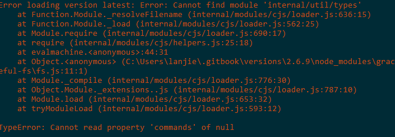
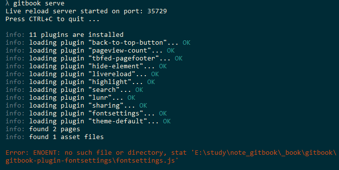
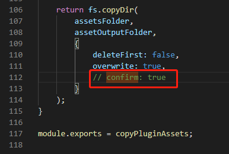

gitbook常见问题
问题一

Error loading version latest: Error: Cannot find module 'internal/util/types'
at Function.Module._resolveFilename (internal/modules/cjs/loader.js:636:15)
at Function.Module._load (internal/modules/cjs/loader.js:562:25)
at Module.require (internal/modules/cjs/loader.js:690:17)
at require (internal/modules/cjs/helpers.js:25:18)
at evalmachine.<anonymous>:44:31
at Object.<anonymous> (C:\Users\lanjie\.gitbook\versions\2.6.9\node_modules\graceful-fs\fs.js:11:1)
at Module._compile (internal/modules/cjs/loader.js:776:30)
at Object.Module._extensions..js (internal/modules/cjs/loader.js:787:10)
at Module.load (internal/modules/cjs/loader.js:653:32)
at tryModuleLoad (internal/modules/cjs/loader.js:593:12)
TypeError: Cannot read property 'commands' of null
解决方案
npm cache clean -f
rm -rf ~/.gitbook/* //windows下找到改文件夹删除
npm install gitbook-cli -g
gitbook init
问题二

Error: ENOENT: no such file or directory, stat 'E:\study\note_gitbook\_book\gitbook\
gitbook-plugin-fontsettings\fontsettings.js'
解决方案

cd ~/.gitbook/versions/版本/lib/output/website/
vim copyPluginAssets.js
// 尝试confirm: ture在底部大约112行处删除
如 C:\Users\user\.gitbook\versions\3.2.3\lib\output\website 找到copyPluginAssets.js
// copyPluginAssets.js
return fs.copyDir(
assetsFolder,
assetOutputFolder,
{
deleteFirst: false,
overwrite: true,
// confirm: true // 注释掉或者删除
}
);